Sentinels and the Last Vigil
Four shrine hunters. Four seal quarters. One road to the Crypt of the Vigil.


Oils of the Sentinels
6 oils. Cube one with an item, a reagent and a Perfect Gem to add the stat you pick.
Oil crafting →


Find a Defiled Shrine
Barrow, Tomb, Rime and Forge Sentinels guard Defiled Shrines. Each Sentinel drops its own seal quarter.
| Sentinel | V | VI | VII | VIII | IX | X | XI | XII | XIII | XIV | XV |
|---|---|---|---|---|---|---|---|---|---|---|---|
| Barrow | ● | ● | ● | ● | ● | ● | ● | ||||
| Tomb | ● | ● | ● | ● | ● | ● | ● | ● | ● | ||
| Rime | ● | ● | ● | ● | ● | ● | |||||
| Forge | ● | ● | ● |
The four Sentinels

Barrow Sentinel
 Barrow Seal QuarterBarrow Sentinel · Hell · 100%
Barrow Seal QuarterBarrow Sentinel · Hell · 100%
Tomb Sentinel
 Tomb Seal QuarterTomb Sentinel · Hell · 100%
Tomb Seal QuarterTomb Sentinel · Hell · 100%
Rime Sentinel
 Rime Seal QuarterRime Sentinel · Hell · 100%
Rime Seal QuarterRime Sentinel · Hell · 100%
Forge Sentinel
 Forge Seal QuarterForge Sentinel · Hell · 100%
Forge Seal QuarterForge Sentinel · Hell · 100% Gilded KeySentinel champions · Hell · 16.64%
Gilded KeySentinel champions · Hell · 16.64%
Gather the seal quarters
Collect the Barrow, Tomb, Rime and Forge quarters. Cube one of each in Harrogath, on Hell, to open the Crypt of the Vigil.
The five-boss vigil

Shade of Barrow Sentinel

Shade of Tomb Sentinel

Shade of Rime Sentinel
Shade of Forge Sentinel
Rewards
The Last Vigil’s uniques

The Sentinel uniques
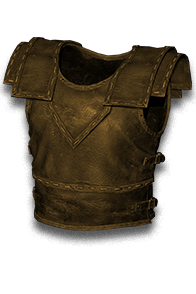
Husk of OfferingsEach Unborn · Hell · 4.167%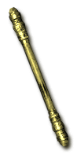
The Altar's Last TaperEach Unborn · Hell · 4.167%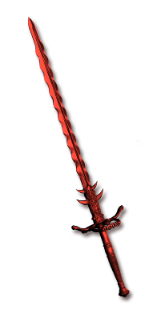
The Shrine's DueEach Unborn · Hell · 4.167%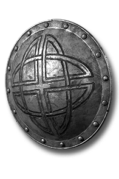
Ward of Four ShrinesEach Unborn · Hell · 4.167%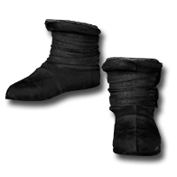
ThawlessEach Unborn · Hell · 1.449%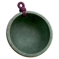
The Empty BowlEach Unborn · Hell · 1.449%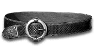
The Pilgrim's GirdleEach Unborn · Hell · 1.449%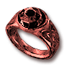
The Red OfferingEach Unborn · Hell · 1.449%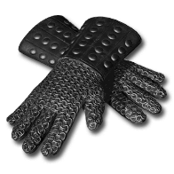
The Steady HandEach Unborn · Hell · 1.449%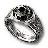
WinterwatchEach Unborn · Hell · 1.449%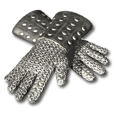
Frostbound GripEach Unborn · Hell · 0.7246% (1 in 138)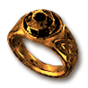
Many HandsEach Unborn · Hell · 0.7246% (1 in 138)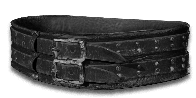
Old LeatherEach Unborn · Hell · 0.7246% (1 in 138)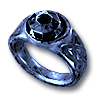
StormwornEach Unborn · Hell · 0.7246% (1 in 138)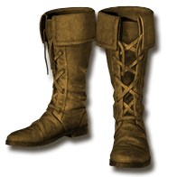
The Broken BellEach Unborn · Hell · 0.7246% (1 in 138)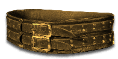
The Iron HitchEach Unborn · Hell · 0.7246% (1 in 138)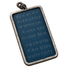
The Quiet WordEach Unborn · Hell · 0.7246% (1 in 138)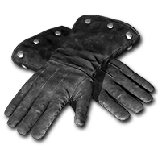
WarmbloodEach Unborn · Hell · 0.7246% (1 in 138)Ashen CuffsEach Unborn · Hell · 0.3623% (1 in 276)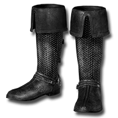
FrostladenEach Unborn · Hell · 0.3623% (1 in 276)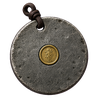
The Grey RetainerEach Unborn · Hell · 0.3623% (1 in 276)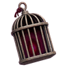
The Kept LightEach Unborn · Hell · 0.3623% (1 in 276)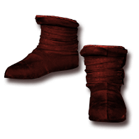
The Trodden StepEach Unborn · Hell · 0.3623% (1 in 276)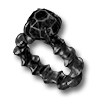
Bitter HoldEach Unborn · Hell · 0.1812% (1 in 552)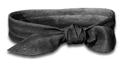
The Mourner's SashEach Unborn · Hell · 0.1812% (1 in 552)The Sentinels are the source of Wax runes and the runewords they unlock. See Wax runes and the runewords they unlock, or explore the other endgame roads.